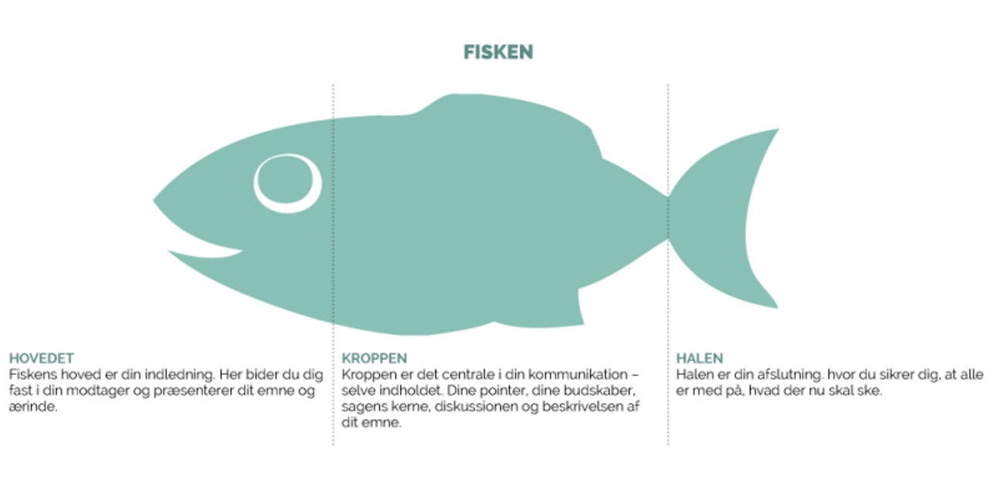
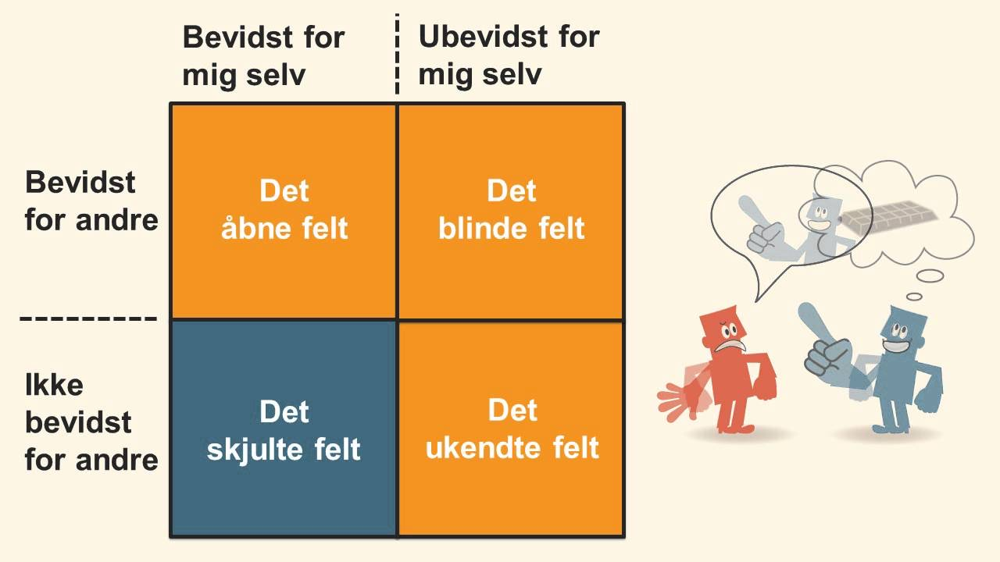

Præsentationsteknik
Vi har i undervisningen arbejdet med hvordan man kan lave den gode præsentation. Der findes forskellige formål med at lave en præsentation:
- Informere
- Overtale
- Uddanne
- Underholde
- Skabe og fastholde interesse
Forskellige præsentationsteknikker
Når man skal lave en præsentation kan man følge denne simple model for at komme i mål
- Invention - Forberedelse, brainstorm og argumentationssøgning
- Dispositio - Budskab, organisering og udvælgelse af argumenter
- Elocutio - Sprog/stil, hvordan skal det præsenteres, ethos/logos/pathos
- Memoria - Manuskript og memorisering
- Actio - Præsentation og evaluering
Fisken er et endnu et klassisk eksemple på hvordan stoffet kan disponeres
- Hovedet er ens indledning. Her skal du bide dig fast i din modtager og præsentere hvad dit emne er.
- Kroppen er selv indholdet. Her fortæller du dine pointer, budskaber, diskussionen og bekrivelsen af emnet
- Halen er afslutningen. Her sikre du dig, at alle er med på, hvad der nu skal ske

Elevatortalen
- Kaldes også et pitch
- Ultrakort fortælling om dig selv - ca. 30-60 sek.
- Vigtigt værktøj når man netværker
- Undgå støj i kommunikationen, der kan forstyrre dit budskab
Når du skal lave en elevator tale kan det være en god ide af følge The 9 C's som er:
- Concise - make it short
- Compelling - make it interesting
- Conceptual - make it undetailed
- Customized - make it to your audience
- Conversational - make it open to further conversation
- Clear - make it understandable
- Credible - make it trustworthy
- Concrete - make it specific
- Consistent - make it align
Non-verbal kommunikation
Når man præsentere skal man tænke på hvordan ens non-verbale kommunikation er. Det inkludere kropssprog, stemmeføring(trykfordeling, åndedræt, tempo), ansigtsudtryk, øjenbevægelser, gestikuleren, håndtryk, afstand til andre samt hvad for noget tøj man har på. Alt dette spiller ind i ens præsentation, og kan have en indflydelse på hvordan din præsentation modtages af dem der hører den. Vores krop står nemlig for 50-70% af al vores kommunikation
Johari's vindue er en model der fungere som et kommunikationsvindue, der består af fire ruder. Modellen består af to dimensioner, de andre og mig selv.
- Det åbne felt - Det som jeg selv er klar over og som andre også ved
- Det blinde felt - Det som du ikke selv er klar over men som andre ved om dig
- Det skjulte felt - Det som du ved om dig selv, men som ingen andre ved
- Det ukendte felt - Det som hverken dig selv eller andre ikke ved om dig.(Schmith, 2021)
